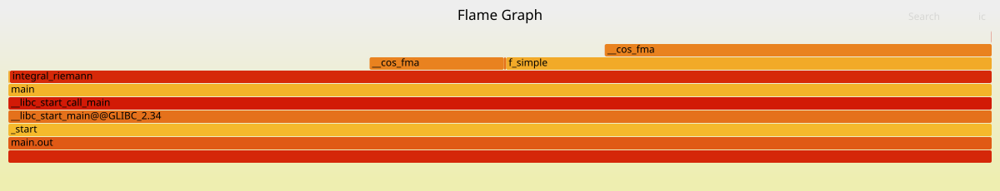
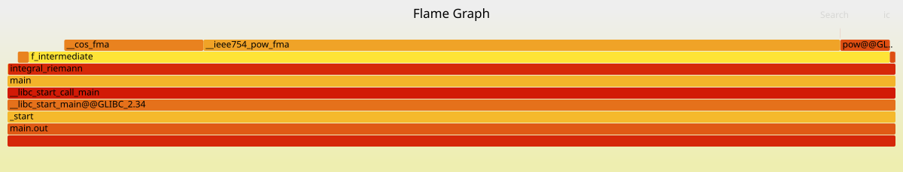
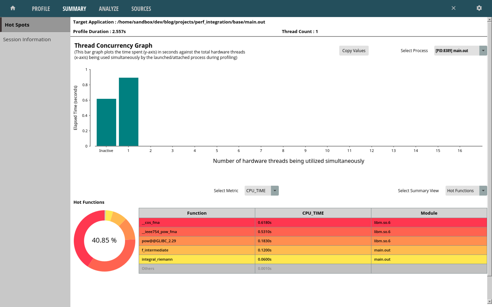
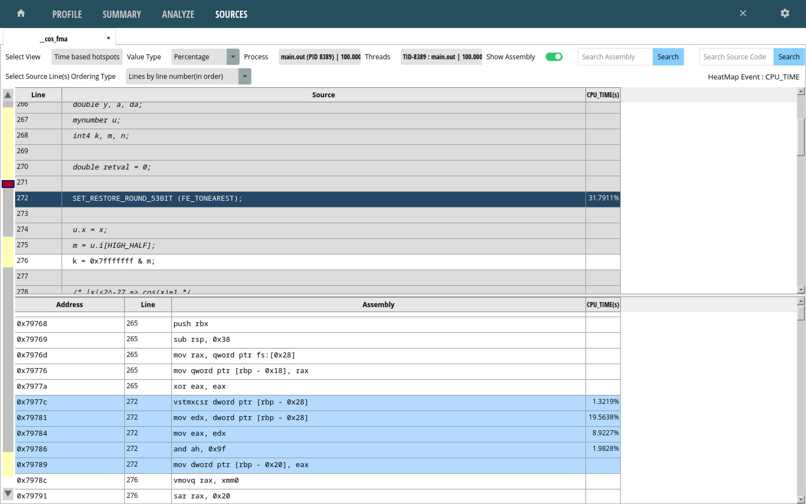
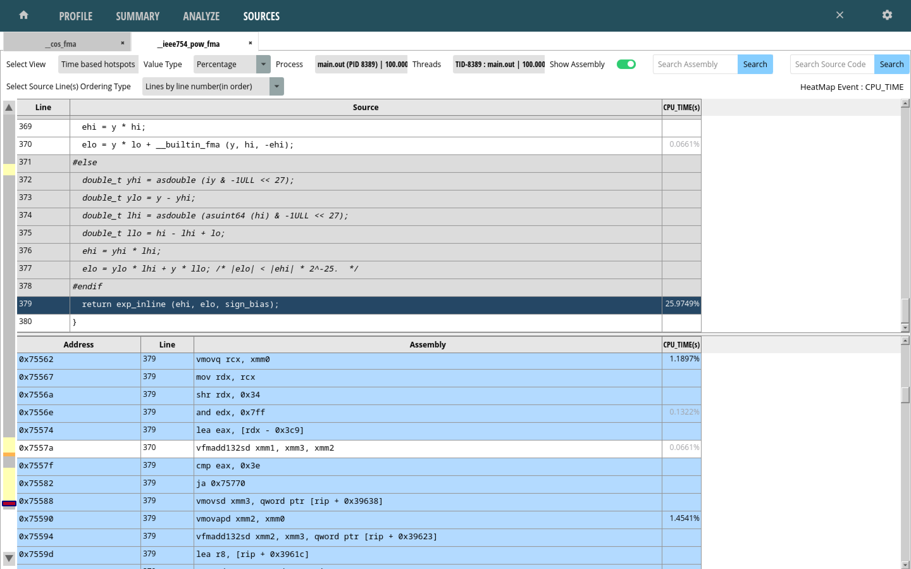
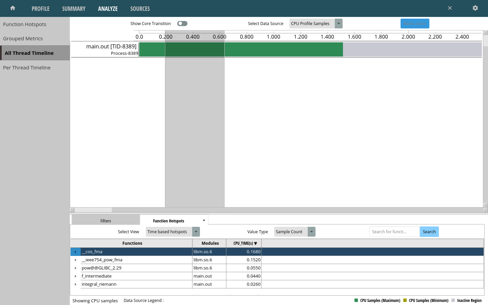

Measurement Techniques |
Version | v1.0.0 | |
|---|---|---|---|
| Updated | |||
| Author | Seb | Home | |
This section explores different tooling used to measure software performance. It exists as more of a journal of exploration more than something like a reference page, although some of the contents will end up forming the base for a reference sheet.
To explore the different tools, the same basic testing code is used from the initial setup:
double a = 0;
double b = M_PI/4;
double split = 1000;
double ans_riemann = integral_riemann(f_simple, b, a, split);
double ans_analytical = integral_analytical(antiderivative_f_simple, b, a);
printf("Riemann:\t\t%g\n", ans_riemann);
printf("Analytical:\t%g\n", ans_analytical);The split variable varies (which tracks how many
rectangles are used to compute a Riemann sum), and the integral
functions being examined vary from the simple function to the
intermediate one.
A basic way to measure execution time is with the time
utility (a shell built-in command or the /bin/time
utility).
Time spent executing library functions is not particularly
interesting if we’re just trying to measure the Riemann integral
function, so the printf() calls are removed. Additionally,
the analytical integral function call is also removed (even if it won’t
impact execution time much). The program is then recompiled and ran with
the time utility:
$ gcc -lm -Wall -o main.out
$ /bin/time ./main.out
0.00user 0.00system 0:00.00elapsed 85%CPU (0avgtext+0avgdata 1664maxresident)k
0inputs+0outputs (0major+80minor)pagefaults 0swapsThis isn’t the most helpful output- changing split to 1
billion and recompiling should help:
6.64user 0.00system 0:06.68elapsed 99%CPU (0avgtext+0avgdata 1664maxresident)k
0inputs+0outputs (0major+80minor)pagefaults 0swapsTrying the same test for the intermediate integral:
14.57user 0.00system 0:14.60elapsed 99%CPU (0avgtext+0avgdata 1792maxresident)k
0inputs+0outputs (0major+85minor)pagefaults 0swapsThese values are more serviceable, however they are still a bit
coarse grained. It would also be nicer if the impact of function calls
could be measured individually- clock_gettime() can help
with this.
clock_gettime() is a system call that can be used to
obtain system timestamps, and thus can be used to calculate how long
certain operations take.
The following snippet demonstrates how this function might be used to
time an arbitrary function call sample_func().
#include <time.h>
struct timespec time1;
struct timespec time2;
clock_gettime(CLOCK_MONOTONIC, &time1);
sample_func();
clock_gettime(CLOCK_MONOTONIC, &time2);
double result_sec = time2.tv_sec - time1.tv_sec;
double result_nsec = time2.tv_nsec - time1.tv_nsec;The absolute time required to execute something depends on many
factors and isn’t exceptionally relevant- it’s much more relevant to see
how the execution time might change after implementing various
optimisations. Just for fun though, the time between two successive
clock_gettime() calls with no work in between is
calculated:
struct timespec time1;
struct timespec time2;
clock_gettime(CLOCK_MONOTONIC, &time1);
clock_gettime(CLOCK_MONOTONIC, &time2);
double result_sec = time2.tv_sec - time1.tv_sec;
double result_nsec = time2.tv_nsec - time1.tv_nsec;
printf("Result seconds: %g | nanoseconds: %g\n", result_sec, result_nsec);The obtained results fluctuated between 70 - 80+ nanoseconds on my machine (AMD Ryzen 7840u CPU).
Back to the integral code, the simple function was tested first with
the results converted to microseconds. The split was set to
100 million:
double a = 0;
double b = M_PI/4;
double split = 10000000;
struct timespec time1, time2;
clock_gettime(CLOCK_MONOTONIC, &time1);
double ans_riemann = integral_riemann(f_simple, b, a, split);
clock_gettime(CLOCK_MONOTONIC, &time2);
double result = (time2.tv_sec - time1.tv_sec) * 1e6 + (time2.tv_nsec - time1.tv_nsec) / 1e3; // in microseconds
printf("Microseconds: %g\n", result);The measured time was ~117000 microseconds. The intermediate integral clocked in at ~187000+ microseconds.
An ugly macro was created to help quickly time arbitrary function calls:
#define TIME_FUNC(TARGET_FUNC_CALL) ({ \
struct timespec time1, time2; \
clock_gettime(CLOCK_MONOTONIC, &time1); \
TARGET_FUNC_CALL; \
clock_gettime(CLOCK_MONOTONIC, &time2); \
(time2.tv_sec - time1.tv_sec) * 1e6 + (time2.tv_nsec - time1.tv_nsec) / 1e3; \
})It can be used in a setup to measure average execution time of some function call:
double time_results = 0.0;
int count = 10;
for (int i = 0; i < count; i++) {
time_results += TIME_FUNC(integral_riemann(f_simple, b, a, split));
}
time_results /= count;This macro will find a little use in a couple of places in future sections.
Some small internal details clock_gettime() are included
below for fun:
Opening up the output program in gdb and stepping
through reveals that glibc ends up going into the vDSO to call
clock_gettime(). This is a mechanism for accessing certain
kernel functions from userland without performing a user -> kernel
context switch, speeding up performance. Stepping through the call stack
yields the following:
───────────────────────────────────────────────────────────────────────────────────────────── trace ────
[#0] 0x7ffff7fc6ac0 → rdtsc_ordered()
[#1] 0x7ffff7fc6ac0 → __arch_get_hw_counter(vd=0x7ffff7fc2080, clock_mode=0x1)
[#2] 0x7ffff7fc6ac0 → do_hres(ts=<optimized out>, clk=<optimized out>, vd=<optimized out>)
[#3] 0x7ffff7fc6ac0 → __cvdso_clock_gettime_common(ts=0x7fffffffda10, clock=0x1, vd=<optimized out>)
[#4] 0x7ffff7fc6ac0 → __cvdso_clock_gettime_data(vd=<optimized out>, ts=0x7fffffffda10, clock=0x1)
[#5] 0x7ffff7fc6ac0 → __cvdso_clock_gettime(ts=0x7fffffffda10, clock=0x1)
[#6] 0x7ffff7fc6ac0 → __vdso_clock_gettime(clock=0x1, ts=0x7fffffffda10)
[#7] 0x7ffff7db2f7d → __GI___clock_gettime(clock_id=<optimized out>, tp=<optimized out>)
[#8] 0x40141c → main(argc=0x1, arg=0x7fffffffdb68)
────────────────────────────────────────────────────────────────────────────────────────────────────────The source
for the rdtsc_ordered() kernel function, as well as the
code disassembly shows that the rdtscp x86_64 instruction
ends up being used to obtain a timestamp value.
─────────────────────────────────────────────────────────────────────────────────────── code:x86:64 ────
0x7ffff7fc6ab7 <clock_gettime+71> mov eax, DWORD PTR [r11+0x4]
0x7ffff7fc6abb <clock_gettime+75> cmp eax, 0x1
0x7ffff7fc6abe <clock_gettime+78> jne 0x7ffff7fc6b3f <__vdso_clock_gettime+207>
→ 0x7ffff7fc6ac0 <clock_gettime+80> rdtscp
0x7ffff7fc6ac3 <clock_gettime+83> xchg ax, ax
0x7ffff7fc6ac5 <clock_gettime+85> shl rdx, 0x20
0x7ffff7fc6ac9 <clock_gettime+89> or rdx, rax
0x7ffff7fc6acc <clock_gettime+92> btr rdx, 0x3f
0x7ffff7fc6ad1 <clock_gettime+97> sub rdx, QWORD PTR [r11+0x8]Next on the investigation list are software profiling tools, which can provide good insights into program performance.
gprof is one such profiling tool. A quick start guide
can be found here,
with a more detailed manual available here.
This tool requires that programs are compiled with support for
profiling- the -pg flag must be added to the
gcc compilation command.
Inspecting the generated object object file with objdump
shows some of the instrumentation that was added, such as the insertion
of mcount() function calls at the beginning of
functions
$ objdump -d main.out -M intel |rg integral_riemann -A 5
000000000040134f <integral_riemann>:
40134f: 55 push rbp
401350: 48 89 e5 mov rbp,rsp
401353: 48 83 ec 40 sub rsp,0x40
401357: e8 24 fd ff ff call 401080 <mcount@plt>
40135c: 48 89 7d d8 mov QWORD PTR [rbp-0x28],rdi
...mcount is a function
in libc that looks like it performs some program counter
tracking.
Running the instrumented binary causes a gmon.out output
file to be created. This is used by gprof to generate its
report. This can be done with the following command, specifying the
output binary and gmon.out file:
gprof main.out gmon.out > gprof.outputFor the test, a split value of 100 million was used.
gprof.output included the following flat profile:
Flat profile:
Each sample counts as 0.01 seconds.
% cumulative self self total
time seconds seconds calls ms/call ms/call name
72.73 0.24 0.24 100000000 0.00 0.00 f_simple
15.15 0.29 0.05 1 50.00 290.00 integral_riemann
12.12 0.33 0.04 _init
0.00 0.33 0.00 2 0.00 0.00 antiderivative_f_simple
0.00 0.33 0.00 1 0.00 0.00 integral_analyticalAccording to this, ~73% of program execution time was spent in
f_simple, and ~15% was spent in
integral_riemann. Comparatively, the analytical solution
ran in no time at all (as expected).
Note that these percentages varied across different runs, however this still provides some hints about the most important places that optimisations could be performed.
The same test was ran with the intermediate integral, which yielded
the following information in the gprof report:
Flat profile:
Each sample counts as 0.01 seconds.
% cumulative self self total
time seconds seconds calls ms/call ms/call name
75.68 0.28 0.28 100000000 0.00 0.00 f_intermediate
13.51 0.33 0.05 1 50.00 330.00 integral_riemann
10.81 0.37 0.04 _init
0.00 0.37 0.00 2 0.00 0.00 antiderivative_f_intermediate
0.00 0.37 0.00 1 0.00 0.00 integral_analyticalThis shows that the total runtime was slightly higher, as expected.
This section reviews the Linux perf tool, which uses
performance counters and tracepoints to perform software profiling.
Some good resources can be found on the wiki as well as Brendan Gregg’s article on the tool. The tests performed below and general structure of this section are gathered from these resources.
perf list lists all the events that can be captured
(turns out there are quite a few, although the line number below doesn’t
correspond to the count of actual events).
perf list | wc -l
1394perf stat gathers performance statistics for the command
it runs. The -d flag specifies that more detailed
statistics should be printed (can be invoked 3 times- the first level
provides L1 and LLC (Last Level Cache) details). -r
specifies how many times to repeat the command, with the average values
and standard deviations being printed for each metric.
These tests are performed with a split value of 100
million. Running the simple integral:
$ perf stat -d -r 10 ./main.out
Performance counter stats for './main.out' (10 runs):
671.71 msec task-clock:u # 0.997 CPUs utilized ( +- 0.36% )
0 context-switches:u # 0.000 /sec
0 cpu-migrations:u # 0.000 /sec
72 page-faults:u # 107.190 /sec ( +- 0.86% )
3,283,751,084 cycles:u # 4.889 GHz ( +- 0.10% ) (71.25%)
1,080,415 stalled-cycles-frontend:u # 0.03% frontend cycles idle ( +- 19.05% ) (71.40%)
9,396,590,420 instructions:u # 2.86 insn per cycle
# 0.00 stalled cycles per insn ( +- 0.02% ) (71.53%)
1,099,979,799 branches:u # 1.638 G/sec ( +- 0.04% ) (71.52%)
6,819 branch-misses:u # 0.00% of all branches ( +- 1.34% ) (71.52%)
3,102,327,767 L1-dcache-loads:u # 4.619 G/sec ( +- 0.02% ) (71.47%)
2,629 L1-dcache-load-misses:u # 0.00% of all L1-dcache accesses ( +- 12.58% ) (71.31%)
<not supported> LLC-loads:u
<not supported> LLC-load-misses:u
0.67380 +- 0.00261 seconds time elapsed ( +- 0.39% )It’s interesting to see the amount of variation that some of the statistics have- it gives some indication of which ones might be relevant to compare across different program runs (although this wasn’t always representative of the real variation that could be seen across runs- many more repetitions would be needed to get a more accurate view of these).
Running the intermediate integral:
Performance counter stats for './main.out' (10 runs):
1,479.49 msec task-clock:u # 0.998 CPUs utilized ( +- 1.88% )
0 context-switches:u # 0.000 /sec
0 cpu-migrations:u # 0.000 /sec
73 page-faults:u # 49.341 /sec ( +- 0.80% )
7,193,718,348 cycles:u # 4.862 GHz ( +- 1.89% ) (71.37%)
1,805,625 stalled-cycles-frontend:u # 0.03% frontend cycles idle ( +- 11.08% ) (71.37%)
23,503,633,295 instructions:u # 3.27 insn per cycle
# 0.00 stalled cycles per insn ( +- 0.01% ) (71.42%)
2,400,189,382 branches:u # 1.622 G/sec ( +- 0.02% ) (71.48%)
10,829 branch-misses:u # 0.00% of all branches ( +- 1.60% ) (71.52%)
6,500,940,982 L1-dcache-loads:u # 4.394 G/sec ( +- 0.01% ) (71.46%)
7,386,942 L1-dcache-load-misses:u # 0.11% of all L1-dcache accesses ( +- 99.94% ) (71.38%)
<not supported> LLC-loads:u
<not supported> LLC-load-misses:u
1.4820 +- 0.0277 seconds time elapsed ( +- 1.87% )Many more instructions were executed in the intermediate integral example, although interestingly the amount of cycles increased by less of a factor- more instructions ended up being executed per cycle.
perf record can be used to collect sample data from a
program run into a perf.data file that can be explored with
perf report. A sampling frequency can be set with the
-F option. Since these programs have a fairly short
runtime, this was set to 50,000.
These tests are performed with a split value of 100
million. Running the simple integral:
$ perf record -F 50000 ./main.out
[ perf record: Woken up 6 times to write data ]
[ perf record: Captured and wrote 1.351 MB perf.data (35359 samples) ]
$ perf report --percent-limit 1This produces the following report:
Samples: 35K of event 'cycles:Pu', Event count (approx.): 3327017536
Overhead Command Shared Object Symbol
93.86% main.out libm.so.6 [.] __cos_fma
3.64% main.out main.out [.] integral_riemann
2.03% main.out main.out [.] f_simpleThese are expected values- the simple integral function just calls the cosine math function. Note that these percentage values can also vary substantially across runs, although the main functions of interest do not change.
Running against the intermediate integral produces the following report:
Samples: 76K of event 'cycles:Pu', Event count (approx.): 7199617188
Overhead Command Shared Object Symbol
62.95% main.out libm.so.6 [.] __cos_fma
16.99% main.out libm.so.6 [.] __ieee754_pow_fma
9.20% main.out main.out [.] f_intermediate
8.49% main.out libm.so.6 [.] pow@@GLIBC_2.29
2.31% main.out main.out [.] integral_riemannAgain, the percentage values varied across runs, however the highest
overhead functions of cos() and pow() remained
the same.
Call stacks can be reported and inspected by running
perf with the -g flag
$ perf record -F 50000 -g ./main.out
$ perf report
Samples: 68K of event 'cycles:Pu', Event count (approx.): 6084489230
Children Self Command Shared Object Symbol
+ 100.00% 0.00% main.out main.out [.] _start ▒
+ 100.00% 0.00% main.out libc.so.6 [.] __libc_start_main@@GLIBC_2.34 ▒
+ 100.00% 0.00% main.out libc.so.6 [.] __libc_start_call_main ▒
+ 100.00% 0.00% main.out main.out [.] main ▒
+ 99.91% 3.24% main.out main.out [.] integral_riemann ▒
+ 92.39% 5.93% main.out main.out [.] f_intermediate ▒
- 71.84% 71.83% main.out libm.so.6 [.] __cos_fma ▒
71.83% _start ▒
__libc_start_main@@GLIBC_2.34 ▒
__libc_start_call_main ▒
main ▒
- integral_riemann ▒
- 68.37% f_intermediate ▒
__cos_fma ▒
3.46% __cos_fma ▒
+ 12.48% 12.48% main.out libm.so.6 [.] __ieee754_pow_fma ▒
+ 6.47% 6.47% main.out libm.so.6 [.] pow@@GLIBC_2.29 This section explores the generation of CPU flame graphs for visualisation of profiling data.
The resources for this section are Brendan Gregg’s article on the topic and the associated git repository.
The flamegraph.pl and stackcollapse.pl
scripts were available either from the git repository or as a package
(Fedora 6.8.5-301.fc40.x86_64). There were several variations of the
stackcollapse.pl script available for different tools and
languages.
Following the guide resulted in an SVG flame graph being generated:
perf record -F 50000 -g ./main.out
perf script | stackcollapse-perf.pl > out-simple.perf-folded
flamegraph.pl out-simple.perf-folded > perf-simple.svg
Running the tooling against the f_intermediate code
example yielded the following graph:

This gives some of the same insights seen with
perf report, except visually- when considering
optimisations for the f_intermediate function, greater
benefits would come from focusing on the pow() function as
compared to the cos() function.
The visual aspect is likely to be quite helpful for more complex
projects where perf report may become hard to parse
This section explores the usage of eBPF to perform performance related tracing.
The general idea is that this system can run user specified programs inside kernel space. Originally this was to perform tasks such as network packet filtering, although the number of supported features has grown substantially.
eBPF programs can be created in several ways, including:
libbpf
library to load programsbcc
to load programs at a higher level with Python, with additional helper
functionalitybpftrace
tool to run tracing scripts, which uses systems like libbpf
under the hood to load the programsWhile the first two options present opportunities for much finer
grained control of tracing programs, bpftrace was examined
here for its ease of use and ability to rapidly explore different
aspects of tracing.
The resources used here include Brendan
Gregg’s article on bpftrace as well as the bpftrace
repository, which provides a lot of documentation along with a
tutorial.
There are a very large number of tracepoints available for tracing
(unlike the perf case, the line number does correspond the
the number of tracepoints)
$ sudo bpftrace -l |wc -l
158935Some of these are hardware related, and were also seen in the
perf tool tests:
hardware:backend-stalls:
hardware:branch-instructions:
hardware:branch-misses:
hardware:branches:
hardware:bus-cycles:
hardware:cache-misses:
hardware:cache-references:
hardware:cpu-cycles:
hardware:cycles:
hardware:frontend-stalls:
hardware:instructions:
hardware:ref-cycles:Most of the available tracepoints exist at various points in the kernel, and since the example code spends the most time in userspace/library code, most of the tracepoints won’t end up being relevant (although they would be very relevant for many other use cases, including system wide tracing).
Other than the hardware events, the most applicable feature of eBPF
in the example code are uprobes- a feature that allows
dynamic tracing of userspace functions.
The following script generates a histogram of the amount of time
spent executing the f_simple function, in nanoseconds:
uprobe:./main.out:f_simple {
@start[tid] = nsecs;
}
uretprobe:./main.out:f_simple
/@start[tid]/
{
@times = hist((nsecs - @start[tid]));
delete(@start[tid]);
}
END {
clear(@start);
}Running bpftrace with this trace.bt
script:
$ sudo bpftrace trace.bt -c main.out
Attaching 3 probes...
@times:
[512, 1K) 99803747 |@@@@@@@@@@@@@@@@@@@@@@@@@@@@@@@@@@@@@@@@@@@@@@@@@@@@|
[1K, 2K) 64066 | |
[2K, 4K) 66444 | |
[4K, 8K) 65100 | |
[8K, 16K) 177 | |
[16K, 32K) 434 | |
[32K, 64K) 32 | |
Note this took a lot longer to execute than normally running the program or using perf- adding overhead to the hottest execution path was not a smart move. to simply outputitng the microsecond count.
Tracing the Riemann integral function is a better idea- the script was modified to do this and compare the two integral functions. Having the histogram also didn’t make a lot of sense for the use case, so this is changed to simply outputting the microsecond count spent exeucting the function
uprobe:./main.out:integral_riemann {
@start[tid] = nsecs;
}
uretprobe:./main.out:integral_riemann
/@start[tid]/
{
// Microsecond time difference
printf("Microseconds in Riemann integral: %lld\n", (nsecs - @start[tid]) / 1e3);
delete(@start[tid]);
}
uprobe:./main.out:integral_analytical {
@start_analytical[tid] = nsecs;
}
uretprobe:./main.out:integral_analytical
/@start_analytical[tid]/
{
printf("Microseconds in analytical integral: %lld\n", (nsecs - @start_analytical[tid]) / 1e3);
delete(@start_analytical[tid]);
}
END {
clear(@start);
clear(@start_analytical);
}
$ sudo bpftrace trace.bt -c main.out
Attaching 5 probes...
Microseconds in Riemann integral: 655934
Microseconds in analytical integral: 6This matches with the ballpark previously, however eBPF provides the functionality to build much more powerful tools. Things like access to function arguments, return values, stack traces, and other built-in features in a programmatic fashion allows for building great tracing tools (not to mention the level of kernel introspection available).
The bpftrace repository has a good
amount of tooling examples available.
AMD provides profilers for their CPUs. They also provide a user guide here.
CLI and GUI tools are included in the provided tooling, as well as several code examples.
The output of the AMDuProf GUI tool is examined
here.
The tool allows selection of a program to profile- the example code
running f_intermediate was chosen.
The following summary was output:

As with the flame graphs from before, the summary view quickly points out functions of interest. Clicking on any of the functions brings up a more detailed view, including source lines/instructions pointing out where the greatest amount of time was spent:

In the above case, a large portion of time seems to have been spent
in the instructions associated with the
SET_RESTORE_ROUND_53BIT() call.
Looking at the pow() function summary shows that a large
amount of time was spent in the exp_inline() call.

There is also the ability to look at calls made in a slice of the execution timeline:

Next, we begin looking at optimisations.